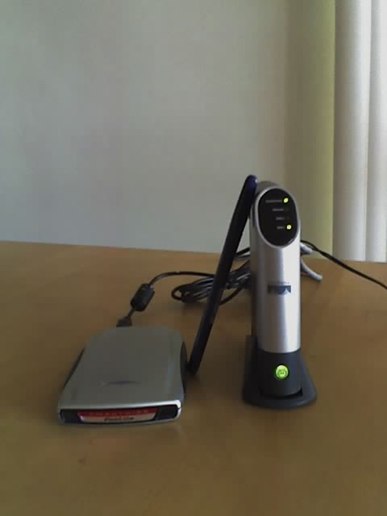

Debian on a Slug: Or how a Slug made friends with a GNU and a Penguin
1 What Is a Slug?
One of the things that caught my eye at SCaLE5x was the booth of the "Sluggers". One consequence of this is that I am typing this article while listening to music emerging from a slug that is also acting as my file backup service... but I'm getting ahead of the story. So, let me start in a more practical way - at the beginning.
It is now possible (and has been since about 2003) to set up Debian GNU/Linux on a small Network Attached Storage (NAS) device, which can act as:
- a Firewall
- a Backup server
- a Web server
- a Music server
- a Print server
...and possibly do all of these at once. One such NAS is called the NSLU2, and is made by Linksys (now a division of Cisco). There are other such NASes available -- see http://www.nslu2-linux.org/ for details.

Figure 1: kutti in action. The flat object on the left is its disk. The pen leaning against kutti is to gauge her size.
Once a NAS device is "converted" to the "Church of Free Software" it is known as a "slug" to its friends like "GNU" and "Tux".
2 The Parts of a Slug
Placing an order for an NAS device is easy, but one needs to make sure that one also has a USB disk storage device with at least 2GB of free space -- I happened to have an 80GB disk which I use to carry around1 my music collection.
A "flash" type disk will also work, but, for the typical installation, you need at least 1GB and preferably 2GB of space. Since the NSLU2 has only 32MB of RAM, you must create a swap partition. Also note that:
- Using semi-conductor memory ("flash") for repeated read-writes will mean that it will stop working much sooner than when it is used only for storage. In particular, using it for "swap" is probably not a great idea.
- If you are going to use the NAS device for large storage, you may as well get a good-sized USB hard disk.
As part of this process, I got to exercise my patience (or my impatience!) by waiting for an external disk. It all turned out well in the end, since the new RC2 Debian installer became available on the same day that the disk arrived.
The NAS has an ethernet port, and you can use that to connect to a PC for the installation phase. At the same time, the NAS will be using that same port to download software, so your PC needs to have some way to get onto the network. I used my laptop, which has two interfaces -- ethernet and wi-fi. I connected the NAS to the laptop via ethernet, and used the wi-fi to connect the laptop to the Internet.
An alternative is to plug the NAS directly into a LAN that is connected to your PC. It is enough if your PC can use this same connection to access the Internet; you don't want to put your slug on the internet until it has "grown up"!
3 The Hardest Step
As with any conversion process, the initial steps are the hardest.
Have we burnt all our bridges?
I recalled the time when I first installed GNU/Linux on a PC, as the same fears were present then. It is clear now that they were unfounded, and I think the words "Don't Panic" should be printed in large letters on all these gadgets2. At the same time, I must say that it is possible to "brick" your device. However, if you follow the instructions then it is unlikely3.
In the case of PCs, we have learnt that all is well, as long as one does not damage the BIOS4. For the slug, the equivalent is "RedBoot" -- you should not erase/replace the RedBoot on a slug, unless you are very confident with a soldering iron or are a slug-killer. Anyway, all the interesting stuff happens after the RedBoot has done its stuff, so why mess with it?
In spite all the helpful hints all over the Web, the actual decision to go ahead with the installation was the hardest step. After some vacillation, the following thought occurred to me: "If I don't install Debian on this, it will feel like a brick to me anyway!"
4 Pre-Packaged Stuff
The NSLU2 already runs Linksys's own version of GNU/Linux. They have posted the sources on their Web page, as well. So you should not feel guilty about connecting to the NSLU2 and playing with the Web interface -- even if you are a True Believer. It's Open Source all the way!
The default boot-up address of the NSLU2 is 192.168.1.77,
so you need to have an address in that range to connect to it. The
simplest way to do this is:
ifconfig eth:0 192.168.1.1 netmask 255.255.0.0
An advantage of using the 192.168.1.1 address is that the
NSLU2 uses that as its DNS server and gateway. After you have this
set up, you can point your browser window (even w3m works!) at
http://192.168.1.77/, to play with the Linksys Web interface.
The manual explains that you can login as admin with password
admin, in order to perform administrative tasks.
The NSLU2 can also be reached during the RedBoot phase. Immediately after
pressing the power-on switch (<2 seconds after boot up), you can do
telnet 192.168.0.77. Note the '0' instead of the
'1'. This is the reason for the netmask chosen above. I didn't
play much with the interface, except to get familiar with it -- "just
in case"!
Meanwhile, you may wish to have the following preparatory tasks done on the laptop: (I am never that efficient, but at least others can be!):
-
Download the patched Debian RC2 via the
slug-firmware.netweb site. The patch is required, since the NSLU2 ethernet card requires firmware that can be downloaded from the Intel Web site after accepting an end-user license; The patch adds this to the RC2 image. - Prepare the USB drive. I used a 2GB swap partition
and a 6GB root partition, and kept the rest for LVM to be set up later. I
also ran
mke2fson the partition chosen for root. - Unzip the Debian RC2 image. Something like
7z x debian-etch-rc2-2007-03-08.zipshould do. This will result in a file calleddi-nslu2.bin.
5 The NSLU2 Sees the Light
The first step of the conversion (appropriately) is to "flash" the NSLU2. You unplug all hard disks from the NSLU2 (and perhaps reboot it just to be on the safe side).
There are two ways to do the firmware upgrade -- the way I describe below,
and the recommended way. Martin Michlmayr was kind enough to point out that
the recommended way is to use upslug2. To do this, install the
upslug2 package on your laptop/PC (it is running
Debian, isn't it?!). The man page that comes with the program is excellent.
I felt that "hard reset" was an unkind step to perform on my soon-to-be slug. So, I followed the steps outlined below.
In the Linksys configuration interface, you go to the "Advanced"
configuration menu, and within that, you choose "Upgrade". This will
give you the option of upgrading the firmware by uploading a file. Put
the full path of your Debian Installer image di-nslu2.bin in
the slot for the file name -- don't press the submit button just yet!
Open another window or tab in your browser (w3m now has tabs!).
Go through the same steps as above in this other window. Now, press
the submit button (actually it is labelled "Start Upgrade"), in one
of the two windows. The NSLU2 will sometimes close this connection to
the browser (due to some bug in the Linksys software). You then need to
resubmit this "Start Upgrade" request after about 30-60 seconds -- aren't
you glad that you still have another window/tab open at the same place?
The NSLU2 will indicate, by means of a flashing amber light, that it is
uploading the firmware and installing it. This takes about 2-3
minutes, and, at the end of it, the NSLU2 will reboot. Didn't work?
Well, you know that adage, "If at first you don't succeed, try, try
again!" It is sometimes tricky getting the timing right. Also, the
"hard reset" approach using upslug2 is less tricky.
|
Category: User kindness
I recalled the time when I first installed GNU/Linux on a PC, as the same fears were present then. It is clear now that those fears were unfounded, and I think the words "Don't Panic" should be printed in large letters on all these gadgets. |
6 Infant Slug
When the NSLU2 next reboots, it has become an "infant slug". It takes a while for it to boot into the installer (about 7 minutes) and then it emits three beeps. If you listen carefully, it is saying "Give me more!" Now that it has a taste of Debian (via the Debian Installer), it really needs the whole thing. At this point, you can, in principle, shut the slug down using the power-off button (or be even more unkind and detach the power cord!). I needed to do this as I had to move my setup to a place that had good enough network connectivity to download all the base Debian packages.
Next, I set things up to use a proxy service on my laptop to serve
the Debian packages to the slug. I could have used apt-proxy
but since I already have polipo setup on my laptop, I used
that. This service listens to port 8123 on the localhost interface.
Next step. Connect the slug to the laptop, as before. This time, also connect the USB disk to the slug and boot it up. Wait for the three beeps and then log in with ssh:
ssh -R 8123:localhost:8123 installer@192.168.1.77
The -R 8123:localhost:8123 is a forethought that I wish I
had had! This login takes you into the Debian installer, from which
one can continue as usual for a Debian installation, except for the
following:
- Do not use the "mtd" devices for anything. These are the firmware devices, and you do not want to write to them until you are an expert.
- Make sure that you avoid formatting your root partition on the slug: you should do this step on your PC. The installer often takes too long, or runs out of memory while doing this on the slug.
- You should use an http proxy setting. When the
installer prompts you for one, you type in:
http://localhost:8123/"Eh?!", you say, "Where is the proxy server on the slug?" Now you understand the point of the-Rswitch. The real proxy server is on your laptop, andsshis just forwarding the connection. - The slug takes a long while to install. In particular, it seems to take a lot of time to setup the time!5 (At this point, you discover why there will never be a flying slug next to the flying GNU and the flying penguin.)
...and two (or more!) hours later your slug is all grown up and ready to roll.
The last stage of the Debian installer is when it writes the kernel
to the firmware of the slug and reboots. It is no longer beeping,
since it now has a base Debian install and can easily feed itself!
You can ssh to it as before. At this point, you may want to
make it a full-fledged member of the network and give it its own static
IP address -- or you may configure it to use DHCP.
One nice thing to note is that only the kernel and the initial
ramdisk (initrd) are on the firmware. If your slug is switched
off, you can just connect the USB disk to your laptop in order to edit
the file system. This is useful. For example, if you managed to
completely screw up your network configuration so that you can't
even ssh into the slug. I used this method to create the LVM
partition on the USB disk and copy my music collection to it.
7 The Singing Slug
One worthwhile way to spend those two hours is to go and shop for a USB audio device. Or you may have been clever and bought it at the same time as you bought the NSLU2!
It is relatively easy to setup your slug to use this device. Just
plug the USB audio device into the "other" USB slot on your system,
and you should see the audio device being nicely auto-detected by
udev. Use alsamixer to set up your volume and try
aplay /usr/share/sounds/alsa/Noise.wav
What - no sound? Did you remember to plug in the speakers into the USB audio device - or a headset? I didn't!
You can now play all your .wav files through the system.
However, don't start installing your favourite music playing software
from the Debian archive just yet. The problem is that the ARM
processor has no floating point unit, and so the players that use
floating point computations to perform music decompression will not
be able to do those computations fast enough to produce anything
resembling music!
Luckily, there is already mpg321, which uses an
integer-arithmetic-based decompression routine for .mp3
files. There is also a version of the Xiph(TM) library for
.ogg files called "Tremor" that does integer arithmetic
base decompression for those files. I found nicely detailed instructions
to set up the mpd music-playing daemon using these libraries
at the http://nslu2-linux.org site.
Voila! Or if you prefer -- Violin!
[ At this point, I was tempted to mark this article as 'rated X'... too much sax and violins. -- Ben ]
8 Backup a Bit
Your slug is complete Debian system - much faster than
that old 386 box with 20MB hard disk and 4MB of RAM that you use as
a mail and DNS server. So, go ahead and create an account for yourself
where you can backup your files using rsync (with the promise
to yourself that next time you will definitely learn enough to set it
up as a Subversion, GIT, or Mercurial repository).
You can also set up a Web server like mathopd (or even
Apache). This is Debian, with 16,000 (...and counting!) packages. The
possibilities are limitless. Remember that it is a slug, but it
"ain't no slouch".
You aren't quite done yet. Don't forget to file your Debian installation
report using reportbug. It is also good manners to donate
something to the guys who setup the nslu2-firmware binaries that helped you
to get your slug rolling, and will help in the creation of more slugs in
future. If you have some money left, then investigate all the USB devices
out there - infra-red, bluetooth, Wi-Fi, VGA adaptor.... Of course, you
need to first buy a USB multi-port hub, since the NSLU2 has only two USB
ports!
9 Resources
The following sites provided extremely useful information:
- The NSLU2 Linux site at http://www.nslu2-linux.org/.
- Martin Michlmayr's Debian/NSLU2 Web site at http://www.cyrius.com/debian/nslu2/.
- The Debian Etch Release and Installation pages for the ARM processor at http://www.debian.org/releases/etch/arm/.
10 Acknowledgements
First of all, I would like to thank CalTech for inviting me for a long period. This gave me enough resources (time and money) to go to SCaLE5x and see the NSLU2-Linux booth there. More importantly, I thank the guys at nslu2-linux, who have worked hard all these years to make the slug the great friend of the GNU and the Penguin. I also thank Martin Michlmayr and the other Debian developers who have made installation of Debian on the NSLU2 a breeze; in particular, Martin also answered a number of questions that I posted in my installation report. I also toast all the contributors to the Wiki at the nslu2-linux.org web site; there are so many ideas there it would take a lifetime to try them all!
Coming back to the money angle a bit. If I look at the amount of money
(less than USD $100) that I have spent on getting my slug (baptized
kutti) up and running, it is certainly money well spent. Not
just because it is my slug, but because it is a genuinely useful
computer in my menagerie. However, when I translate this amount into Indian
Rupees, I realise that it is not an amount that could be "thrown away" on
an experimental project funded from one's own earnings. Which is why I
wrote this article -- to try to convince others that this is not
"experimental" anymore. Go forth and multiply those slugs!
- 1
- I presume that I am allowed to do this under "fair use" clauses!
- 2
- Kudos to Douglas Adams for realising the importance of this phrase.
- 3
- To quote P. Smith: "Never confuse the impossible with the improbable."
- 4
- A friend managed to brick his laptop by flashing the BIOS.
- 5
- I thought it was trying to contact an NTP server, but Martin Michlmayr clarified that it was not.
Talkback: Discuss this article with The Answer Gang
 Kapil Hari Paranjape has been a ``hack''-er since his punch-card days.
Specifically, this means that he has never written a ``real'' program.
He has merely tinkered with programs written by others. After playing
with Minix in 1990-91 he thought of writing his first program---a
``genuine'' *nix kernel for the x86 class of machines. Luckily for him a
certain L. Torvalds got there first---thereby saving him the trouble
(once again) of actually writing code. In eternal gratitude he has spent
a lot of time tinkering with and promoting Linux and GNU since those
days---much to the dismay of many around him who think he should
concentrate on mathematical research---which is his paying job. The
interplay between actual running programs, what can be computed in
principle and what can be shown to exist continues to fascinate him.
Kapil Hari Paranjape has been a ``hack''-er since his punch-card days.
Specifically, this means that he has never written a ``real'' program.
He has merely tinkered with programs written by others. After playing
with Minix in 1990-91 he thought of writing his first program---a
``genuine'' *nix kernel for the x86 class of machines. Luckily for him a
certain L. Torvalds got there first---thereby saving him the trouble
(once again) of actually writing code. In eternal gratitude he has spent
a lot of time tinkering with and promoting Linux and GNU since those
days---much to the dismay of many around him who think he should
concentrate on mathematical research---which is his paying job. The
interplay between actual running programs, what can be computed in
principle and what can be shown to exist continues to fascinate him.